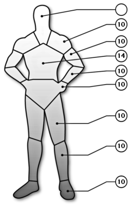

The values given are without bonus/malus (laser sight, smartlink, encumbrance, etc.) except for the bonus due to cybernetics.
In order to satisfy everyone, these characters were not made with Ocelot's system. Those of you who do use the Alternate Character Generation System should have no problem modifying the following characters to fit your needs.
| Name | Batou | Role | Cop | Armor |
 | Gender | Age |  |
| M | ~32 |
| Stats |
| INT | 8 |
| REF | 12 |
| TECH | 6 |
| COOL | 10 |
| ATTR | 5 |
| LUCK | 6 |
| MA | 10 |
| BODY | 12 |
| EMP | 6 |
| Run | 50 m |
| Leap | 2.5 m |
| Lift | 60 kg |
 | NameEnc. |
Light armor jacket0
Light armor pants0
Total0 |
| |
| Skills[Base / Total] | [Base / Total] |
|
Special abilities
Authority[ 5 / ]
Combat sense[ 9 / ]
Body
Endurance[ 9 / ]
Strength feat[ 7 / ]
Swimming[ 3 / ]
Cool/will
Streetwise[ 5 / ]
Interrogation[ 6 / ]
Intimidate[ 8 / ]
Intelligence
Library search[ 3 / ]
Education & General knowledge[ 6 / ]
Expert (counter-terrorism)[ 6 / ]
Expert (covert operations)[ 6 / ]
Awareness/Notice[ 8 / ]
Hide/Evade[ 5 / ]
Shadow/Track[ 6 / ]
Wilderness survival[ 5 / ]
|
Reflex
Submachine gun[ 5 / ]
Heavy weapons[ 6 / ]
Martial arts (Krav-Maga)[ 5 / ]
Athletics[ 4 / ]
Submarine combat[ 4 / ]
Driving[ 8 / ]
Motorcycle[ 7 / ]
Stealth[ 5 / ]
Dodge & Escape[ 4 / ]
Rifle[ 7 / ]
Melee[ 7 / ]
Handgun[ 9 / ]
Tech
Weaponsmith[ 6 / ]
Pick lock[ 5 / ]
Demolitions[ 6 / ]
|
| |
| Weapon(s)[#] | Type | WA | Conc. | Ammo | Dam. | #Shots[#] | ROF | Rel. | Range |
| Seburo Bobsons[1] | PST | 0 | P | 9 mm C | 2D6+1D3+1 | 10[3] | 2 | VR | 50 m |
| Seburo J10[1] | SMG | +2 | L | 10 mm C | 2D6+3 | 50[0] | 2/3/25 | VR | 250 m |
| |
| Equipment | Cybernetic |
| Unknown | Unknown |
| |
| Background |
| Batou is a brawny man who, like Motoko, is an expert in covert operations. He has been working as Motoko's partner for many years, and it is likely that they may have to served together in the armed forces. He is almost always cool and level headed, and acts as a foil to the Major's sometimes-rash judgement. Like Motoko, Batou is a full borg. Unlike Motoko he seems to have an overtly military body. |
| Name | Deunan Knute | Role | Solo | Armor |
 | Gender | Age |  |
| F | 23 |
| Stats |
| INT | 9 |
| REF | 10 |
| TECH | 5 |
| COOL | 9 |
| ATTR | 8 |
| LUCK | 8 |
| MA | 7 |
| BODY | 8 |
| EMP | 6 |
| Run | 35 m |
| Leap | 1.75 m |
| Lift | 40 kg |
 | NameEnc. |
Arasaka Gasium K-6 Battlesuit1
Total1 |
| |
| Skills[Base / Total] | [Base / Total] |
|
Special abilities
Authority[ 3 / ]
Combat sense[ 9 / ]
Attractiveness
Wardrobe & Style[ 4 / ]
Personal grooming[ 5 / ]
Body
Endurance[ 4 / ]
Strength feat[ 3 / ]
Swimming[ 5 / ]
Cool/will
Streetwise[ 4 / ]
Interrogation[ 4 / ]
Resist torture/drugs[ 3 / ]
Empathy
Persuasion & Fast Talk[ 3 / ]
Social[ 2 / ]
|
Intelligence
Education & General knowledge[ 7 / ]
Accounting[ 1 / ]
Language (amharic)[ 4 / ]
Language (japanese)[ 4 / ]
Language (english)[ 9 / ]
Awareness/Notice[ 8 / ]
Hide/Evade[ 5 / ]
Shadow/Track[ 5 / ]
Wilderness survival[ 7 / ]
Reflex
Submachine gun[ 7 / ]
Heavy weapons[ 5 / ]
Martial arts (Kupigana Ngumi)[ 3 / ]
Martial arts (Judo)[ 6 / ]
Martial arts (Krav-Maga)[ 8 / ]
Athletics[ 9 / ]
Driving[ 4 / ]
Motorcycle[ 6 / ]
Stealth[ 6 / ]
Dodge & Escape[ 7 / ]
Rifle[ 5 / ]
Melee[ 9 / ]
Pilot (ACPA)[ 9 / ]
Handgun[ 10 / ]
Tech
Weaponsmith[ 3 / ]
Forgery[ 3 / ]
Pick lock[ 4 / ]
Disguise[ 3 / ]
Electronics[ 3 / ]
Demolitions[ 4 / ]
Basic tech[ 4 / ]
Pickpocket[ 2 / ]
First Aid[ 3 / ]
|
| |
| Weapon(s)[#] | Type | WA | Conc. | Ammo | Dam. | #Shots[#] | ROF | Rel. | Range |
| Poseidon-Norinco Gong[1] | PST | +1 | L | CAL12 | 4D6/2D6/1D6+1 | 6[3] | 1 | VR | 100 m |
| |
| Equipment | Cybernetic |
| Unknown | None |
| |
| Background |
Deunan is the pointman, lover and partner to Briareos. She is complex mix of several races including French, African, English and American. She met "Bri" in 2116 at the early age 11, and the two immediately formed a close friendship. Briareos originally took the role of the protective uncle in Deunan's life but as she grew older their relationship became more personal and intimate. Deunan's mother was murdered by racists in South Africa, afterwards her father Carl Knute took his children to America. Deunan has several siblings but not much is known about them or her parents.
Her father Carl trained Deunan extensively for combat. He he was head of LAPD SWAT before the war but no real details exist as of yet. Deunan is well trained in virtually all combat proficiencies and is a confident martial artist, not very strong she makes up for this weakness with speed and agility. Hitomi headhunted her and Briareos, they were living in America's badside at the time and Hitomi convinced them to come to Olympus. Since then they have again taken up their roles in law enforcement and are integral members of E-SWAT. |
| Name | Major Motoko Kusanagi | Role | Cop | Armor |
 | Gender | Age |  |
| F | 35-40 |
| Stats |
| INT | 9 |
| REF | 15 |
| TECH | 6 |
| COOL | 7 |
| ATTR | 8 |
| LUCK | 6 |
| MA | 15 |
| BODY | 15 |
| EMP | 5 |
| Run | 75 m |
| Leap | 3.75 m |
| Lift | 75 kg |
 | NameEnc. |
Level 2 body armor1
Total1 |
| |
| Skills[Base / Total] | [Base / Total] |
|
Special abilities
Authority[ 7 / ]
Interface[ 3 / ]
Combat sense[ 9 / ]
Body
Endurance[ 8 / ]
Strength feat[ 7 / ]
Swimming[ 3 / ]
Cool/will
Streetwise[ 5 / ]
Interrogation[ 6 / ]
Intimidate[ 6 / ]
Empathy
Leadership[ 4 / ]
Social[ 3 / ]
Intelligence
Library search[ 4 / ]
Education & General knowledge[ 8 / ]
Expert (counter-terrorism)[ 6 / ]
Expert (covert operations)[ 7 / ]
Awareness/Notice[ 6 / ]
Hide/Evade[ 5 / ]
Shadow/Track[ 6 / ]
Wilderness survival[ 3 / ]
|
Reflex
Submachine gun[ 8 / ]
Heavy weapons[ 4 / ]
Martial arts (Krav-Maga)[ 7 / ]
Athletics[ 4 / ]
Submarine combat[ 6 / ]
Driving[ 6 / ]
Stealth[ 6 / ]
Dodge & Escape[ 4 / ]
Rifle[ 7 / ]
Melee[ 6 / ]
Handgun[ 7 / ]
Tech
Weaponsmith[ 6 / ]
Forgery[ 4 / ]
Pick lock[ 7 / ]
Demolitions[ 6 / ]
|
| |
| Weapon(s)[#] | Type | WA | Conc. | Ammo | Dam. | #Shots[#] | ROF | Rel. | Range |
| Seburo Bobsons[1] | PST | 0 | P | 9 mm C | 2D6+1D3+1 | 10[3] | 2 | VR | 50 m |
| Seburo C-X[1] | PST | +3 | J | 11 mm C | 3D6+2 | 16[2] | 2 | VR | 75 m |
| Seburo MN-40[1] | RIF | +2 | N | 5.56C | 5D6 | 30[2] | 2/3/15 | VR | 400 m |
| |
| Equipment | Cybernetic |
| Unknown | Raven Microcybernetics Ghost
|
| |
| Background |
| Kusanagi's background is almost completely a mystery. What is known is that she served with some sort of military before, were she undoubtedly acquired the nickname "Major" (no it's not her section 9 rank). The "Major's" section 9 career began when she was scouted from the special maneuver team of the Ministry of Home Affairs. She is extensively trained in covert tactics, intelligence, and demolitions. Motoko is a full borg and only a part of her brain is from her original body. Although her body is made to look like a standard body, it is in fact highly advanced, top of the line combat model. Like all borgs of her type she is equipped with an advanced cyber-brain. Motoko appears to be in her early 20's but her actual age is estimated at being in her late 30's. |